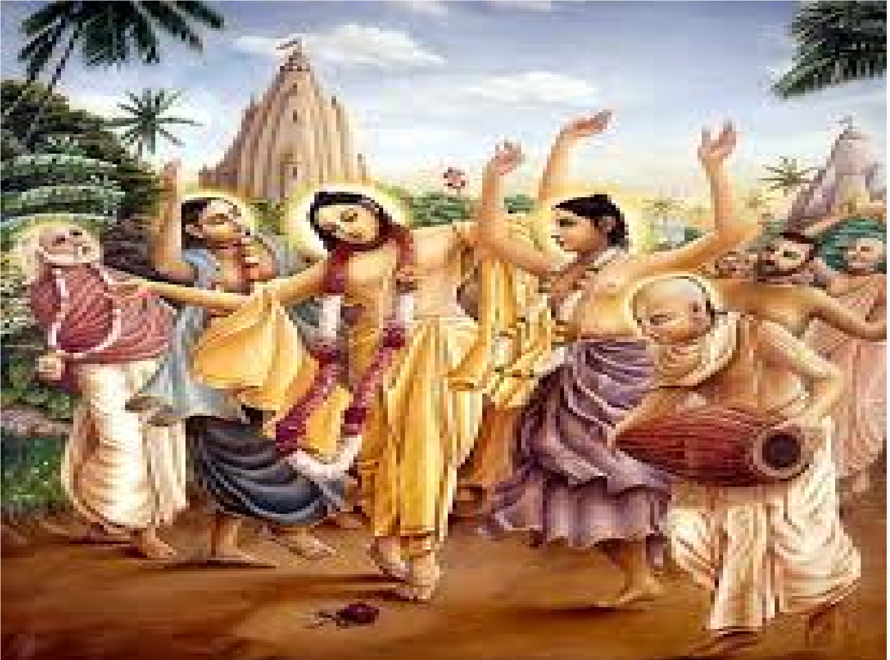

Revision Flow Chart

Emergence of New Regional Cultures
- Development of Regional Languages
- Urdu, Hindi(North India)
- Malayalam(Kerala)
- Marathi(Maharashtra)
- Punjabi(Punjab)
- Telegu(Andhra Pradesh)
- Bangla(West Bengal)
- Odiya(Odisha)
- Rajasthani(Rajasthan)
- Local Socio-religious Culture
- Jagannatha cult(Odisha)
- Jauhar(Rajasthan)
- New Dance Forms
- Bharatanatyam(Tamil Nadu)
- Kathakali(Kerala)
- Kuchipudi(Andhra Pradesh)
- Odissi(Odisha)
- Kathak(North India)
- Art of Miniature Paintings
- Rajputana School(Rajasthan)
- Kangra School(Himachal Pradesh)